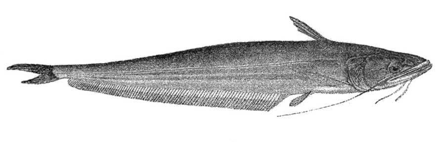

मल्लाGiant Catfish
Wallago attu · Siluridae · FSH-0005

- Scientific name
- Wallago attu (Bloch & Schneider, 1801)
- Family
- Siluridae
- Hindi
- मल्ला
- Status here
- native
- IUCN
- VU
When to look कब देखें
Present all year.
मल्ला / Giant Catfish
Wallago attu (Bloch & Schneider, 1801) — Siluridae
मल्ला — पूर्वी उत्तर प्रदेश की बड़ी नदियों और गहरे जलाशयों में रहने वाली एक विशालकाय शल्क-रहित (scaleless) कैटफ़िश, जिसे इसके अत्यंत आक्रामक स्वभाव और पैने दांतों के कारण 'मीठे पानी की शार्क' भी कहा जाता है। इसका मुंह अविश्वसनीय रूप से चौड़ा होता है, जिसका कट पीछे आँखों के पार तक जाता है। इसके मुंह के पास दो लंबी मूंछें होती हैं जो छाती के पंख के पार तक लटकती हैं। यह पानी के छोटे जीवों और अन्य मछलियों का शिकार करने वाला एक बड़ा मांसाहारी शिकारी है। अपनी बड़ी साइज़ और तेल से भरपूर मांस के कारण यह मछुआरों के लिए एक प्रमुख व्यावसायिक मछली है, लेकिन यह तालाब की खेती को भारी नुकसान पहुँचा सकती है।
Quick Identification त्वरित पहचान
| Feature | Description |
|---|---|
| Form | Scaleless, elongated, laterally compressed body; tapers sharply towards the tail |
| Mouth | Enormous, wide mouth; the cleft of the mouth extends backwards beyond the eyes |
| Barbels | 2 pairs of feelers; maxillary barbels are very long, extending past the pectoral fins; mandibular barbels short |
| Fins | Very short, tiny dorsal fin (only 5 rays) on the upper back; exceptionally long anal fin (85–95 rays) extending along the belly |
| Coloration | Uniform silvery-grey or greenish-brown on the back; shading to creamy white on the belly |
| Size | Large freshwater catfish, commonly growing 80–150 cm in length in river channels |
Field tip: A massive, scaleless, silvery catfish with a huge mouth that slashes back past its eyes, a tiny triangular dorsal fin, and a very long anal fin. The jaws are packed with multiple rows of sharp, needle-like teeth that curve backward.
Morphology आकारिकी
Biometrics (typical measurements in Gangetic plain populations):
| Measurement | Range |
|---|---|
| Standard length (SL) | 60–120 cm |
| Total length (TL) | 80–200 cm |
| Weight | 5–45 kg |
Body: Elongated and strongly compressed laterally, especially towards the tail. The skin is completely smooth and scaleless, covered with a thin layer of mucus.
Head: Large, broad, and depressed. The mouth is terminal and huge, with an extremely deep cleft that cuts back beyond the posterior margin of the eye. The jaws are armed with multiple rows of sharp, curved, cardiform teeth that point inward to prevent prey from escaping.
Barbels: Two pairs. Maxillary barbels are very long and slender, extending past the pectoral fins; mandibular barbels are short, about equal to the length of the snout.
Fins: The dorsal fin is extremely small and short, located on the anterior back, containing only 5 soft rays. The anal fin is very long, with 85–95 soft rays, extending from the belly to the tail fin. The tail fin (caudal fin) is deeply forked.
Ecological Role पारिस्थितिक भूमिका
Apex riverine predator. Wallago attu is a dominant carnivore in large river channels and oxbow lakes. It is almost exclusively piscivorous, preying on other fish species, frogs, and occasionally waterbirds, regulating the populations of smaller fish.
Floodplain colonizer. During monsoon floods, adults migrate into flooded grasslands and agricultural marshes. Their predatory activity in these shallow nursery zones has a major impact on the survival rates of young riverine fish fry.
Nocturnal hunter. It is primarily a nocturnal predator, resting in deep pools by day and moving to shallow banks at night to hunt by detecting water vibrations with its long maxillary barbels.
Life Cycle / Phenology जीवन चक्र
- Spawning migration: In June–July, with the onset of monsoon floods, adults migrate from deep river channels into shallow flooded grassy areas to spawn.
- Egg-laying: The female broadcasts sticky eggs over submerged grass. Unlike other catfishes, they show no parental care; the eggs are left to hatch on their own.
- Growth: Fry hatch in 24 hours. They grow extremely fast but suffer from high rates of cannibalism; larger fry actively consume their smaller siblings.
- Winter refuge: In winter, adults return to the deepest pools (dah) of major rivers, where they remain relatively inactive.
Host Plants or Prey आहार
Primary prey items:
- Carp species (Labeo rohita, Catla catla).
- Small catfishes and minnows.
- Frogs and tadpoles.
- Aquatic crabs and large prawns.
- Occasional small wading birds or rodents.
Predators / Natural Enemies शत्रु
- Gharials and Mugger Crocodiles — Primary predators of adults in large river channels.
- Ganges River Dolphins — Hunt juveniles in deep river pools.
- Humans — Heavily targeted by commercial fisheries.
Agricultural / Human Relevance कृषि प्रासंगिकता
Economic food fish. Locally known as Malla (मल्ला) or Boal in Basti. It is a major commercial catch in the Ghaghara and Kuwano rivers. The flesh is rich, oily, and has a single central bone structure, making it popular in local fish markets. However, its market price is generally lower than that of Rohu due to its soft texture.
Pond pest. If Malla juveniles accidentally enter managed carp culture ponds during monsoon floods, they act as destructive pests. A single Malla can consume hundreds of young Rohu and Catla fingerlings, causing complete economic loss for fish farmers.
Fishing methods. Caught by professional fishermen using:
- Longlines (Maha-bansi): Baited with live small fish or frogs, left overnight.
- Large drag nets (Mahajal): Used to sweep deep river pools during the dry summer season.
Expected Locally स्थानीय रूप से अपेक्षित
Not a field record. Written from published accounts for eastern Uttar Pradesh. No confirmed local sighting yet — if you have seen it, that is what the atlas needs.
अभी तक स्थानीय पुष्टि नहीं। यह विवरण प्रकाशित स्रोतों से है, किसी अवलोकन से नहीं।
Found in the Ghaghara, Kuwano, and Ami rivers bordering Basti district. It is also found in large permanent oxbow lakes (chaurs). Large specimens weighing over 15 kg are regularly displayed at the Basti town fish market, attracting high bids.
Distribution वितरण
Global range: Widespread across the Indian subcontinent and Southeast Asia, including Pakistan, India, Nepal, Bangladesh, Sri Lanka, Myanmar, Thailand, Vietnam, and western Indonesia.
In India: Present in all major river systems, especially the Ganges, Indus, and Brahmaputra basins.
In Uttar Pradesh: Abundant in all major rivers (Ganges, Yamuna, Ghaghara, Sarda) and deep reservoirs.
In Basti district / eastern UP: Found in the major rivers of the district (Ghaghara and Kuwano) and large perennial wetlands.
Range notes: No significant range changes documented.
Research Questions शोध प्रश्न
Anyone can investigate these | कोई भी इन प्रश्नों की जाँच कर सकता है
- What is the maximum size of Malla caught in the Ghaghara River around Basti today compared to 20 years ago? / आज बस्ती के आसपास घाघरा नदी में पकड़ी जाने वाली मल्ला मछली का अधिकतम आकार 20 साल पहले की तुलना में कैसा है? — Interview elderly fishermen to document size declines.
- How do fish farmers prevent Malla from entering their ponds during monsoon flooding? / मानसून की बाढ़ के दौरान मछली पालक मल्ला को अपने तालाबों में प्रवेश करने से कैसे रोकते हैं? — Document local fencing and net barrier methods.
- What is the frequency of cannibalism among Wallago attu fry in local nursery ponds? — Observe and record feeding interactions in a controlled tank.
- Does the population of Malla decline in river stretches with high industrial or sewage pollution? — Compare catch rates in polluted vs. clean river zones.
- How does the catch rate of Malla change seasonally between the dry summer and the wet monsoon? / शुष्क गर्मियों और गीले मानसून के बीच मल्ला मछली की पकड़ दर मौसमी रूप से कैसे बदलती है? — Survey fish markets monthly.
Similar Species मिलती-जुलती प्रजातियाँ
| Species | How to tell apart | हिंदी |
|---|---|---|
| Walking Catfish (Clarias batrachus) | Much smaller; has a very long dorsal fin extending along the back; 8 whiskers; can breathe air | मांगुर — लंबी पीठ की पंख, मूंछदार |
| Stinging Catfish (Heteropneustes fossilis) | Slimmer, smaller; has a short dorsal fin and very long venomous pectoral stings | सिंगी — छोटा पीठ का पंख, जहरीला |
| Rohu (Labeo rohita) | Has large scales; small mouth with no teeth; feeds on algae; lacks whiskers | रोहू — बड़े शल्क, शाकाहारी |
Field rule: Enormous mouth extending past the eyes, scaleless silvery-grey body, very short dorsal fin, and very long anal fin identify Wallago attu.
Taxonomy & Classification वर्गीकरण
Original description. Bloch and Schneider described the species as Silurus attu in 1801 in their catalog Systema Ichthyologiae iconibus CX illustratum (p. 378). The type locality is Malabar, India. It was later moved to the genus Wallago by Bleeker. The genus name Wallago is derived from the Telugu local name Wallagah. The specific epithet attu is the Tamil local name.
Subspecies. Monotypic — no subspecies are currently recognised.
Family and order placement. Placed in the order Siluriformes (catfishes), family Siluridae (sheatfishes). Siluridae is characterized by a compressed body, lack of scales, and a very long anal fin.
Phylogenetic notes. Wallago attu is a basal silurid predator. Genetic studies suggest that the Southeast Asian populations may represent a distinct species, leaving Wallago attu restricted to South Asia.
IUCN status rationale. Listed as Vulnerable (VU). The species has suffered severe population declines (estimated at 30–50% over the last decade) across its range due to overfishing, river fragmentation from dams, and loss of spawning floodplains.
Photo Gallery फोटो गैलरी
References संदर्भ
- Bloch, M.E. & Schneider, J.G. (1801). Systema Ichthyologiae iconibus CX illustratum. Berlin, p. 378.
- Day, F. (1878). The Fishes of India. Bernard Quaritch, London.
- Talwar, P.K. & Jhingran, A.G. (1991). Inland Fishes of India and Adjacent Countries. Vol. 2. Oxford & IBH Publishing, New Delhi.
- Ng, H.H. (1999). The taxonomy of the Neotropical catfish genus Wallago. Journal of Natural History, 33(11), 1727–1748.
- Zoological Survey of India (ZSI) — Freshwater Fish of Uttar Pradesh.
- GBIF Occurrence Data — Wallago attu, Uttar Pradesh (2010–2025).
Source file: species/fauna/fish/giant_catfish.md